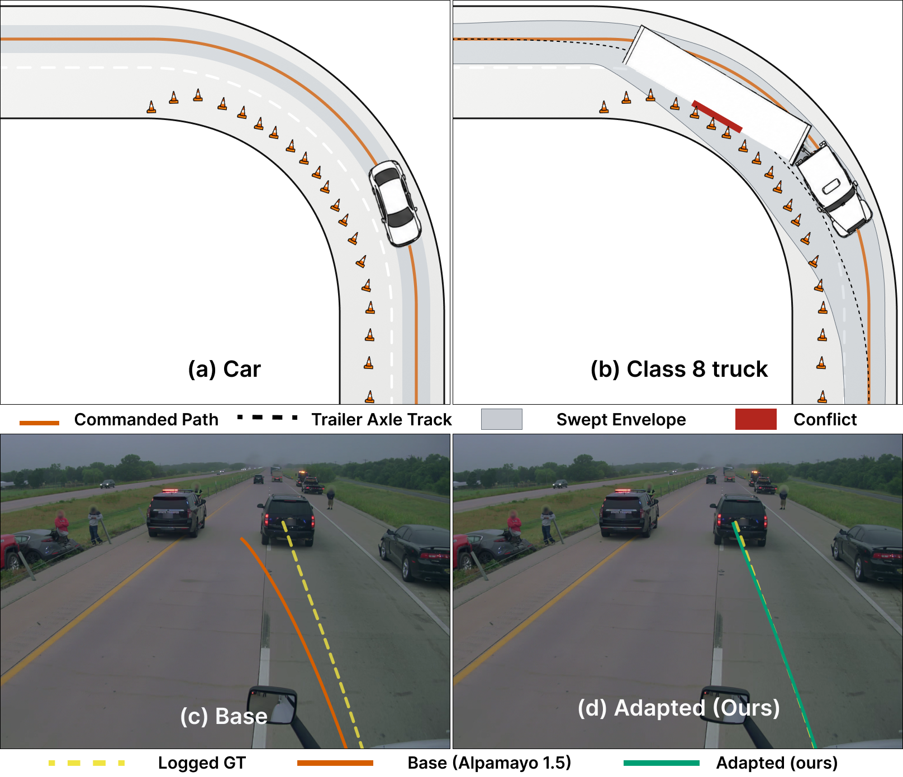
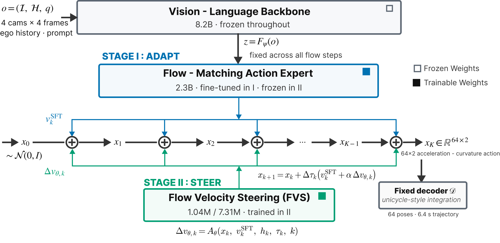
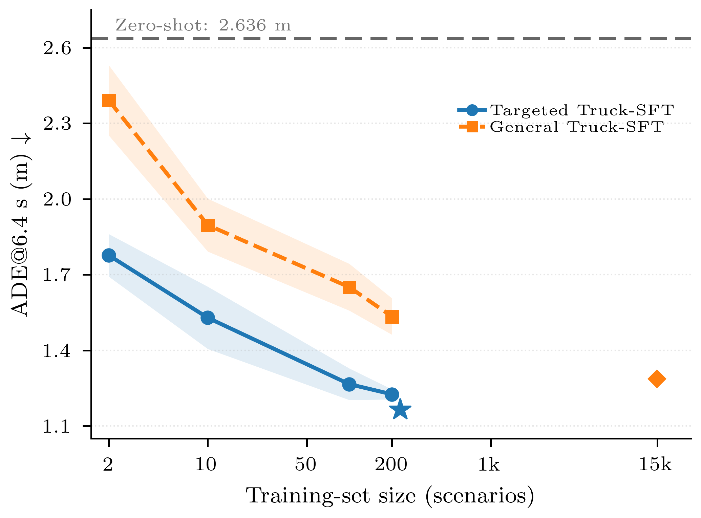
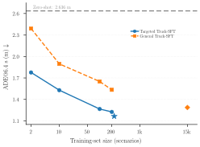

{kind=link}
{kind=link}
{kind=link}
Stage I / Adapt
Targeted Truck-SFT
Fine-tune the action-generation stack on 229 targeted truck scenarios while keeping the pretrained vision-language backbone frozen. Training retains Alpamayo 1.5’s native flow-matching objective.
1 University of Southern California2 Stack AV
The paper link will be added with the arXiv release.
A code link is not available yet.
Preserve the backbone. Adapt the action expert. Steer the action generation.
Same observation. Same logged expert trajectory. Truck-specific action generation.
Adapted = Targeted SFT + FVS.
Accident I · K=1 · 6.4 s prediction horizon · Open-loop evaluation
Class 8 trucks differ from passenger cars in geometry, dynamics, and maneuvering requirements. We propose an adapt-then-steer strategy that uses limited targeted demonstrations to adapt vision-language-action (VLA) models for generating candidate trajectories in long-tail truck-driving scenarios. In the adapt stage, we use NVIDIA’s Alpamayo 1.5 as the base model, fine-tuning only its action-generation stack on a few hundred real-world construction and accident-related highway scenarios. In the steer stage, we introduce Flow Velocity Steering (FVS) to further refine the model’s predictions while holding the adapted VLA fixed. FVS is a compact, flow-time-conditioned residual module that adds learned corrections to the action-space flow velocity used to update the action sequence at each generation step. In open-loop evaluation on a scenario-disjoint held-out set, targeted fine-tuning more than halves single-candidate average displacement error (ADE) and final displacement error (FDE) over the entire 6.4 s horizon compared to the base model. Using the same targeted demonstrations, FVS further reduces the fine-tuned model’s full-horizon ADE and FDE by 13.9% and 16.5%, respectively. At matched data budgets, targeted supervision yields 19–26% lower full-horizon ADE than general truck-driving supervision, while the targeted model remains competitive with one fine-tuned on approximately 65× as many general truck-driving scenarios. These results support adapt-then-steer for data-efficient vehicle-domain transfer to Class 8 trucks.
01 / The challenge
The motion appropriate for a scene depends on the vehicle’s physical embodiment. A Class 8 truck differs from a passenger car in sensor viewpoint, articulated geometry, kinematics, vehicle dynamics, and maneuver timing.
Vision-language-action (VLA) models combine multimodal scene representations with trajectory generation, providing a strong starting point for complex driving scenarios. But trajectories appropriate for one vehicle may not satisfy the geometric and maneuverability requirements of another.
The figure shows one such geometric consequence. Under the same reference path, the passenger car clears the work-zone closure, while trailer off-tracking causes the Class 8 truck’s swept envelope to enter it.

02 / The approach
Stage I fine-tunes the action-generation stack with the vision-language backbone frozen. Stage II freezes the adapted policy and learns a flow-time-conditioned residual correction to its action-space flow velocity.
Two stages: targeted adaptation and flow velocity steering.
Swipe across the diagram, or tap it to enlarge.
Stage I / Adapt
Fine-tune the action-generation stack on 229 targeted truck scenarios while keeping the pretrained vision-language backbone frozen. Training retains Alpamayo 1.5’s native flow-matching objective.
Stage II / Steer
Keep the adapted VLA frozen and learn a residual correction to its action-space flow velocity at each generation step. FVS uses the same targeted demonstrations and adds only 7.31M trainable parameters (<0.1%).
Steered Euler update in normalized action space
vkSFT is the frozen Action Expert’s nominal flow velocity, while Δvθ,k is the learned FVS correction.

View full figure ↗03 / Real truck encounters
These videos show four held-out test scenarios that were not used for Targeted SFT or FVS training. Each scenario is compared across adaptation stages and candidate settings using the same logged observations, 6.4 s prediction horizon, and matched inference-noise seed.
4(a) · Accident-related
Left: GT + Base. Right: GT + FVS. Adapted denotes Targeted Truck-SFT followed by Transformer FVS.Top: GT + Base. Bottom: GT + FVS.
One camera view compares GT, off-the-shelf Base, and Targeted Truck-SFT. This isolates the first adaptation stage.GT + Base + Targeted Truck-SFT.
Left: GT + Base + SFT. Right: GT + Base + FVS. FVS refines the same frozen Targeted Truck-SFT checkpoint.Top: GT + Base + SFT. Bottom: GT + Base + FVS.
Left to right: all 16 Base candidates, all 16 SFT candidates, and all 16 FVS candidates. Each panel contains one GT trajectory and predictions from only one model. Shading shows candidate spread, not a physical truck swept envelope or confidence interval.Top to bottom: all 16 Base, SFT, and FVS candidates, each compared with GT. Shading shows candidate spread, not a physical truck swept envelope or confidence interval.
4(b) · Accident-related
Left: GT + Base. Right: GT + FVS. Adapted denotes Targeted Truck-SFT followed by Transformer FVS.Top: GT + Base. Bottom: GT + FVS.
One camera view compares GT, off-the-shelf Base, and Targeted Truck-SFT. This isolates the first adaptation stage.GT + Base + Targeted Truck-SFT.
Left: GT + Base + SFT. Right: GT + Base + FVS. FVS refines the same frozen Targeted Truck-SFT checkpoint.Top: GT + Base + SFT. Bottom: GT + Base + FVS.
Left to right: all 16 Base candidates, all 16 SFT candidates, and all 16 FVS candidates. Each panel contains one GT trajectory and predictions from only one model. Shading shows candidate spread, not a physical truck swept envelope or confidence interval.Top to bottom: all 16 Base, SFT, and FVS candidates, each compared with GT. Shading shows candidate spread, not a physical truck swept envelope or confidence interval.
4(c) · Construction
Left: GT + Base. Right: GT + FVS. Adapted denotes Targeted Truck-SFT followed by Transformer FVS.Top: GT + Base. Bottom: GT + FVS.
One camera view compares GT, off-the-shelf Base, and Targeted Truck-SFT. This isolates the first adaptation stage.GT + Base + Targeted Truck-SFT.
Left: GT + Base + SFT. Right: GT + Base + FVS. FVS refines the same frozen Targeted Truck-SFT checkpoint.Top: GT + Base + SFT. Bottom: GT + Base + FVS.
Left to right: all 16 Base candidates, all 16 SFT candidates, and all 16 FVS candidates. Each panel contains one GT trajectory and predictions from only one model. Shading shows candidate spread, not a physical truck swept envelope or confidence interval.Top to bottom: all 16 Base, SFT, and FVS candidates, each compared with GT. Shading shows candidate spread, not a physical truck swept envelope or confidence interval.
4(d) · Construction
Left: GT + Base. Right: GT + FVS. Adapted denotes Targeted Truck-SFT followed by Transformer FVS.Top: GT + Base. Bottom: GT + FVS.
One camera view compares GT, off-the-shelf Base, and Targeted Truck-SFT. This isolates the first adaptation stage.GT + Base + Targeted Truck-SFT.
Left: GT + Base + SFT. Right: GT + Base + FVS. FVS refines the same frozen Targeted Truck-SFT checkpoint.Top: GT + Base + SFT. Bottom: GT + Base + FVS.
Left to right: all 16 Base candidates, all 16 SFT candidates, and all 16 FVS candidates. Each panel contains one GT trajectory and predictions from only one model. Shading shows candidate spread, not a physical truck swept envelope or confidence interval.Top to bottom: all 16 Base, SFT, and FVS candidates, each compared with GT. Shading shows candidate spread, not a physical truck swept envelope or confidence interval.
Clockwise from top left: Accident I, Accident II, Construction II, Construction I. All four play concurrently.
04 / The evidence
| Method | ADE@6.4s ↓ | FDE@6.4s ↓ |
|---|---|---|
| Base | 2.6358 ± 0.1493 | 7.1830 ± 0.2868 |
| Targeted Truck-SFT | 1.1650 ± 0.0184 | 3.1590 ± 0.0213 |
| FVS (Transformer) | 1.0035 ± 0.0035 | 2.6383 ± 0.0156 |
Consistent adaptation. Targeted SFT lowers scenario-mean ADE@6.4s relative to Base in all 26 held-out scenarios.
Consistent refinement. Transformer FVS also lowers scenario-mean ADE@6.4s relative to Targeted SFT in all 26 scenarios.
| Method | K=1 · Single candidate | K=16 · Oracle best-of-16 | ||||||
|---|---|---|---|---|---|---|---|---|
| ADE@1s | ADE@3s | ADE@6.4s | FDE@6.4s | minADE@1s | minADE@3s | minADE@6.4s | minFDE@6.4s | |
| CTRV | 0.1643 | 0.7003 | 2.0430 | 5.8412 | N/A | N/A | N/A | N/A |
| Base | 0.1530 ± 0.0018 | 0.6836 ± 0.0440 | 2.6358 ± 0.1493 | 7.1830 ± 0.2868 | 0.0621 ± 0.0001 | 0.2556 ± 0.0082 | 0.9402 ± 0.0038 | 2.3849 ± 0.0118 |
| Targeted Truck-SFT | 0.0600 ± 0.0008 | 0.3120 ± 0.0081 | 1.1650 ± 0.0184 | 3.1590 ± 0.0213 | 0.0413 ± 0.0004 | 0.1855 ± 0.0029 | 0.6968 ± 0.0115 | 1.8118 ± 0.0398 |
| General Truck-SFT | 0.0584 ± 0.0017 | 0.3146 ± 0.0194 | 1.2868 ± 0.0049 | 3.7404 ± 0.0824 | 0.0361 ± 0.0001 | 0.1659 ± 0.0051 | 0.6634 ± 0.0044 | 1.7652 ± 0.0240 |
| General → Targeted SFT | 0.0580 ± 0.0017 | 0.3121 ± 0.0168 | 1.2539 ± 0.0422 | 3.6012 ± 0.0703 | 0.0371 ± 0.0008 | 0.1716 ± 0.0045 | 0.6697 ± 0.0009 | 1.7587 ± 0.0313 |
| Final-Action Residual (MLP) | 0.0595 ± 0.0006 | 0.3060 ± 0.0043 | 1.1362 ± 0.0092 | 3.1071 ± 0.0186 | 0.0402 ± 0.0003 | 0.1813 ± 0.0012 | 0.6918 ± 0.0073 | 1.8001 ± 0.0232 |
| Final-Action Residual (Transformer) | 0.0589 ± 0.0006 | 0.3010 ± 0.0032 | 1.1276 ± 0.0081 | 3.0002 ± 0.0175 | 0.0391 ± 0.0003 | 0.1801 ± 0.0016 | 0.6876 ± 0.0051 | 1.7992 ± 0.0210 |
| FVS (MLP) | 0.0481 ± 0.0003 | 0.2659 ± 0.0004 | 1.0065 ± 0.0035 | 2.6527 ± 0.0171 | 0.0363 ± 0.0000 | 0.1658 ± 0.0001 | 0.6613 ± 0.0027 | 1.7419 ± 0.0115 |
| FVS (Transformer) | 0.0468 ± 0.0003 | 0.2656 ± 0.0009 | 1.0035 ± 0.0035 | 2.6383 ± 0.0156 | 0.0354 ± 0.0000 | 0.1642 ± 0.0006 | 0.6573 ± 0.0012 | 1.7003 ± 0.0102 |
ADE averages Euclidean position error through each horizon; FDE measures error at its endpoint. For K=16, each metric independently selects its lowest-error candidate before averaging across windows. This oracle best-of-set measure does not assume an online selector with access to GT. CTRV is deterministic; learned-model uncertainty reflects inference-noise variability for fixed checkpoints.
| Method | Lateral ADE (m) | Longitudinal ADE (m) | Heading error (°) |
|---|---|---|---|
| CTRV | 0.7958 | 1.6934 | 1.6162 |
| Base | 1.0204 ± 0.0638 | 2.1706 ± 0.2306 | 3.2926 ± 0.8549 |
| Targeted Truck-SFT | 0.4749 ± 0.0130 | 0.9323 ± 0.0197 | 0.8851 ± 0.0232 |
| General Truck-SFT | 0.4832 ± 0.0152 | 1.0929 ± 0.0402 | 1.1377 ± 0.0459 |
| General → Targeted SFT | 0.4932 ± 0.0140 | 1.0385 ± 0.0298 | 1.1192 ± 0.0553 |
| Final-Action Residual (MLP) | 0.4634 ± 0.0070 | 0.9115 ± 0.0115 | 0.8590 ± 0.0172 |
| Final-Action Residual (Transformer) | 0.4592 ± 0.0068 | 0.9009 ± 0.0117 | 0.8512 ± 0.0171 |
| FVS (MLP) | 0.4059 ± 0.0053 | 0.7738 ± 0.0127 | 0.7644 ± 0.0120 |
| FVS (Transformer) | 0.3870 ± 0.0051 | 0.7650 ± 0.0110 | 0.7169 ± 0.0105 |
Lateral and longitudinal ADE measure mean absolute VCP-position error along the corresponding axes. Final heading error is the absolute angular difference at 6.4 s. Values are mean ± sample standard deviation across inference-noise seeds, except deterministic CTRV.
The value of targeted demonstrations
At matched budgets of 2, 10, 100, and 200 scenarios, targeted supervision achieves 19–26% lower ADE than general truck-driving supervision.
With 229 targeted scenarios, Targeted Truck-SFT remains competitive with a model trained on 14,891 general scenarios, approximately 65× as much data.
The ordering depends on the metric: general supervision performs better on some oracle best-of-16 measures. Sweep curves summarize three independently trained subset runs; full-data checkpoints are separate references.

View full figure ↗
View full figure ↗05 / Reference
Citation to be updated.
% Citation details to be updated.
@misc{citation_to_be_updated,
title = {To be updated},
author = {To be updated}
}{kind=link}
{kind=link}
{kind=link}